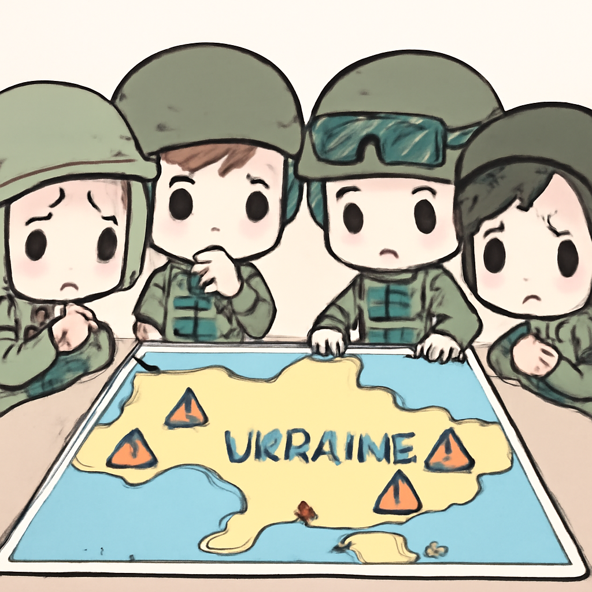
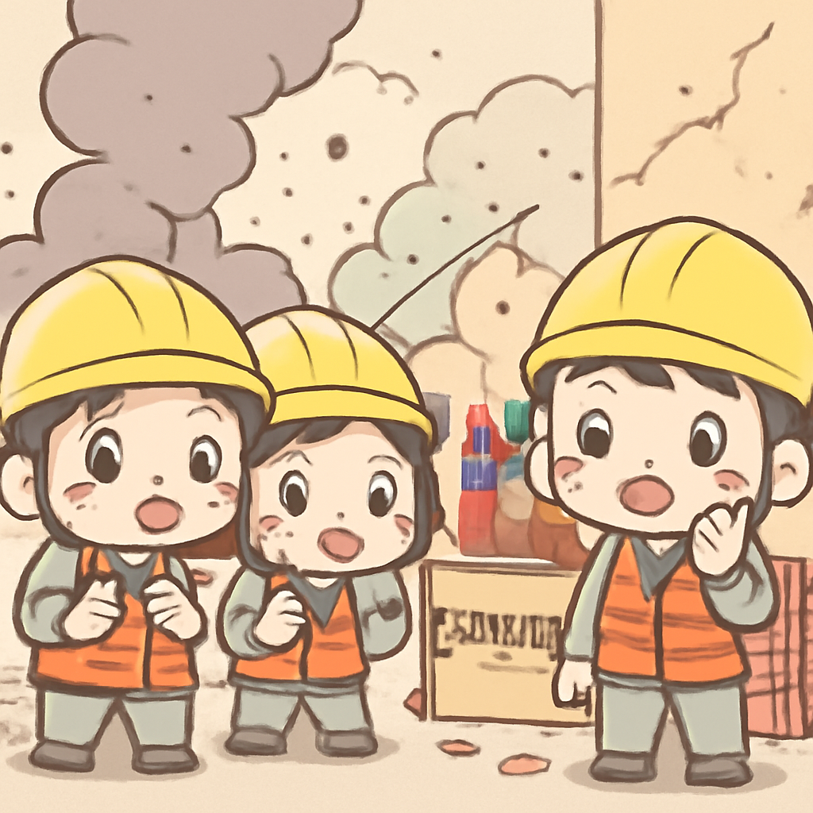
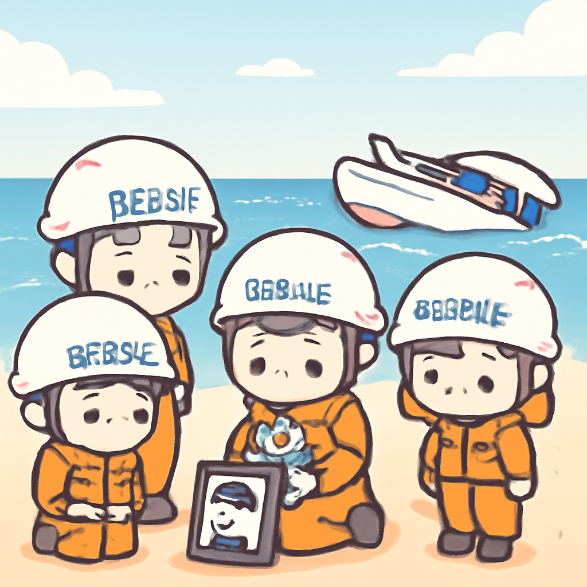

其一 · 俄羅斯基輔 · 俄烏衝突再起人員傷亡
俄烏衝突中，基輔前夕遭俄攻擊，超過20人遇難

在烏克蘭基輔，俄羅斯的攻擊造成超過20人喪生，這發生在基輔宣佈將於5月6日開始停火之際。這次襲擊再次凸顯了戰爭的殘酷與不確定性，讓人不禁思考和平何時能來。
🔗 原始新聞 ↗
2026-05-06 · 以古觀今，以笑抗愁
俄烏衝突中，基輔前夕遭俄攻擊，超過20人遇難

在烏克蘭基輔，俄羅斯的攻擊造成超過20人喪生，這發生在基輔宣佈將於5月6日開始停火之際。這次襲擊再次凸顯了戰爭的殘酷與不確定性，讓人不禁思考和平何時能來。
🔗 原始新聞 ↗
德國萊比錫發生驅車撞人事件，造成2死多傷
在德國萊比錫，發生了一起驅車撞人事件，造成2人喪生，數十人受傷。當局已逮捕一名33歲的德國公民，這起事件引起了社會對公共安全的質疑，真是讓人心驚的事故。希望大家都能多注意周圍的安全。
🔗 原始新聞 ↗
中國湖南鞭炮廠爆炸事故，造成26人遇難，61人受傷

在中國湖南，一家鞭炮廠發生爆炸，造成26人遇難，61人受傷。這是近年來最致命的事故之一，讓人更加關注生產安全問題。希望類似的悲劇不再重演，大家能平安回家。
🔗 原始新聞 ↗
羅馬尼亞總理遭不信任投票罷免，政治局勢動盪
在羅馬尼亞，總理伊利耶·博洛揚因不信任投票而被罷免，這顯示出政治局勢的動盪。這個事件讓人關注未來的政治走向，或許將影響國內的各種政策與改革。政治就是這樣，總是讓人摸不著頭腦。
🔗 原始新聞 ↗
救援船在澳洲海岸翻覆，兩名志願者遇難

在澳洲海岸，一艘救援船在惡劣天氣中翻覆，導致兩名志願者不幸遇難。這一事件讓人感受到救援工作的艱辛與危險，讓人更加珍惜那些為他人冒險的人。希望他們能安息。
🔗 原始新聞 ↗